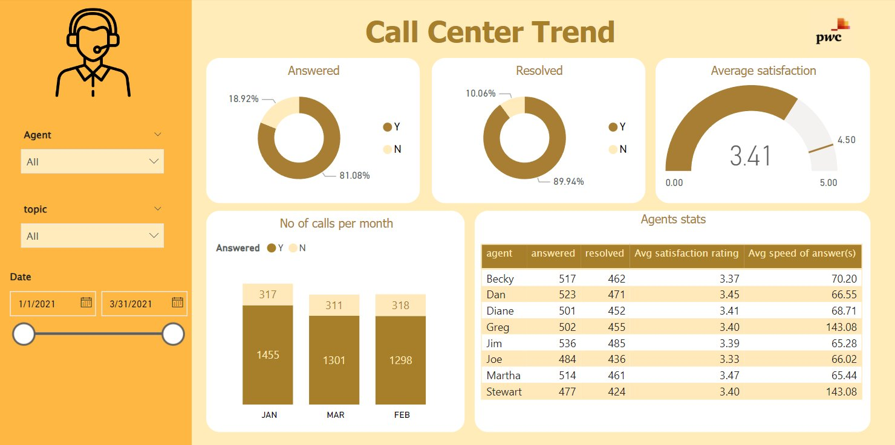
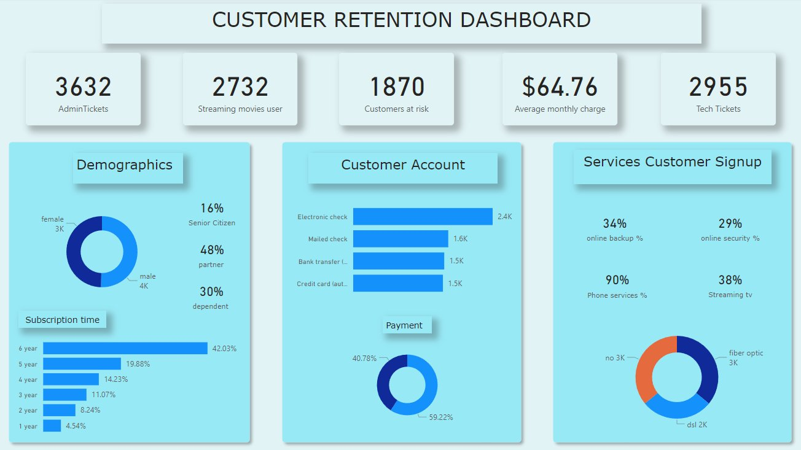
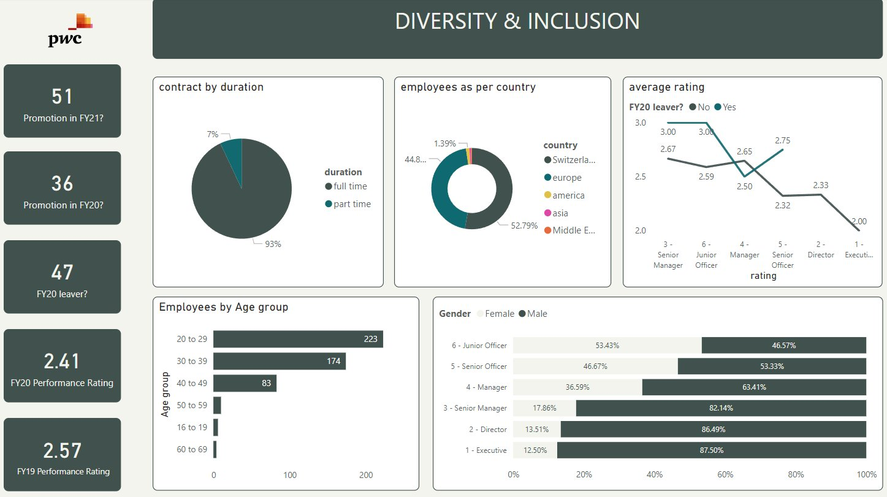

A 3-task virtual internship covering call centre analytics, customer churn, and diversity — built with Power BI, DAX, and MySQL.

Built an interactive Power BI dashboard to help the Call Centre Manager track agent performance, resolution rates, and customer satisfaction KPIs — with dynamic filters by Agent, Topic, and Date range.

Designed a retention dashboard for the Retention Manager to proactively identify customers at risk of churning — with full demographic, payment, and subscription breakdowns.

Analysed gender balance across job levels, promotions, and performance ratings to help HR leadership understand diversity gaps and make informed decisions.
-- 1. Count resolved calls by topic SELECT topic, COUNT(resolved) AS resolved_count FROM task1_forage.call_center WHERE resolved = 'Y' GROUP BY topic; -- 2. Average talk duration by topic SELECT Topic, SEC_TO_TIME(AVG(TIME_TO_SEC(AvgTalkDuration))) AS AvgTalkDuration FROM task1_forage.call_center GROUP BY Topic; -- 3. Average satisfaction rating by topic SELECT topic, ROUND(AVG(`satisfaction rating`), 2) AS avg_rating FROM task1_forage.call_center GROUP BY topic; -- 4. Overall average speed of answer SELECT SEC_TO_TIME(ROUND(AVG(TIME_TO_SEC(`speed of answer in seconds`)), 2)) AS avg_speed FROM task1_forage.call_center; -- 5. Total answered calls per month SELECT MONTH(STR_TO_DATE(Date, '%m/%d/%Y')) AS CallMonth, COUNT(*) AS TotalAnsweredCalls FROM task1_forage.call_center WHERE `Answered (Y/N)` = 'Y' GROUP BY MONTH(STR_TO_DATE(Date, '%m/%d/%Y')); -- 6. Per-agent summary: answered, resolved, avg rating, avg speed SELECT Agent, COUNT(CASE WHEN `Answered (Y/N)` = 'Y' THEN 1 END) AS TotalAnsweredCalls, COUNT(CASE WHEN Resolved = 'Y' THEN 1 END) AS TotalResolvedCalls, ROUND(AVG(`Satisfaction rating`), 2) AS AvgSatisfactionRating FROM task1_forage.call_center GROUP BY Agent;